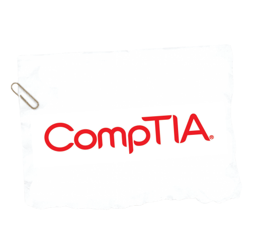
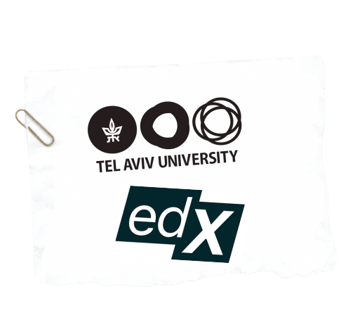
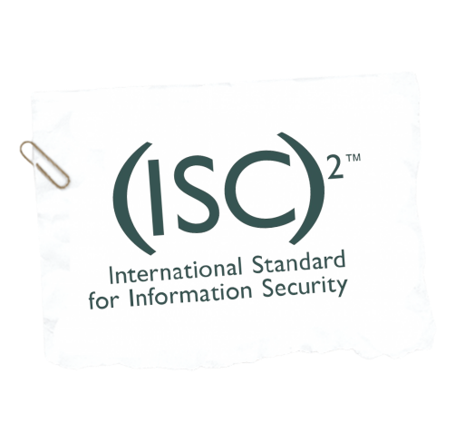
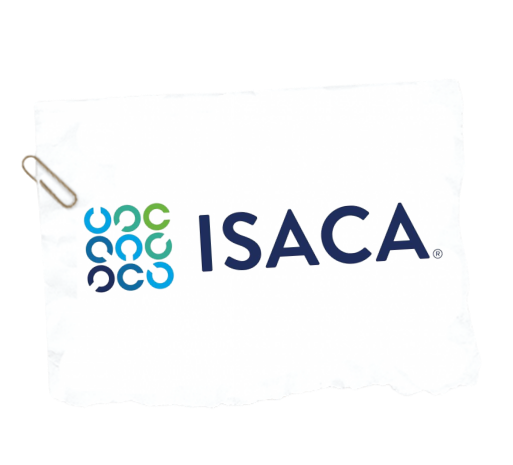

Looking for more opportunities to explore the cryptography field or bolster your resumé? Certifications are an excellent option!
| CompTIA Security+9 | This basic security certification encompasses a concise, in-depth foundation for any cybersecurity role. Security+ is continually updated to match the ever-changing cybersecurity scene, and is used by many companies to validate these skills. A fundamental certification if you're going into any cybersecurity career. |
| edX Unlocking Information Security10 | This online course by Tel Aviv University focuses on understanding how to combat vulnerabilities and introduces important cryptographic tools. While not a standalone certificate like CompTIA's catalogue, it provides a professional certificate that is likely to be recognized by most employers. A flexible and innovative course that is great for intermediate-level cryptographers. |
| (ISC)2 Certified Information Systems Security Professional11 | This advanced-level certification is one of the most sought-after certifications in the professional industry, run by the international cybersecurity organization (ISC)2. Note that five or more years of work experience in any cybersecurity field is required to qualify for the CISSP exam. An essential certification for top-level cryptography-based jobs. |
| ISACA Certified Information Systems Auditor12 | Another highly sought-after certification is the ISACA CISA, which focuses on vulnerability assessment and auditing cybersecurity. Just like the CISSP, at least 5 years of experience is required to qualify. Akin to CISSP, a great certification to have for top-level cryptographers. |